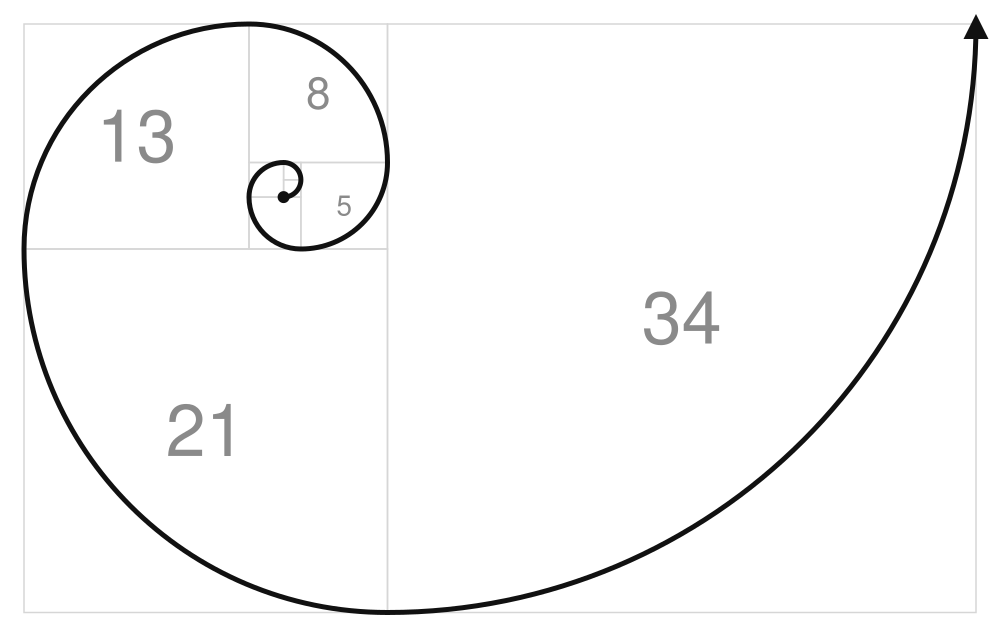

The law as a spiral. Each square is the sum of the two before it, and none is thrown away. Start anywhere and the ratio between neighbours still converges on φ ≈ 1.618, always approaching, never arriving. Cut off the newest square and what is left has the same shape again, so there is always a remainder. The spiral never closes. An emblem, not a model: the layers themselves are on the map below.